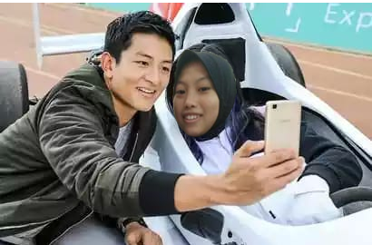

{kind=link}

BIODATA

Saya suka membaca buku jika ada waktu senggang yang leluasa. Hanya beberapa jenis novel yang saya suka, seperti novel yang memiliki tema adventure and action atau romance. Saya lebih banyak menghabiskan waktu dengan teman sekolah dibandingkan dengan orang tua dan keluarga saya. Karena, saya memutuskan untuk menempati kosan di daerah tempat saya bersekolah, saya sekolah di SMAKBO.Jadi, keseharian saya hanya diisi dengan kegiatan pembelajaran seperti pelajar lainnya. Setelah pulang sekolah biasanya saya membeli makanan untuk di kosan. Malam hari biasanya saya gunakan untuk mengerjakan tugas sekolah, jika ada. Jika tugas selesai lebih awal, sebelum tidur biasanya saya akan menonton film hingga tertidur. Paginya saya akan berangkat sekolah seperti biasa. Untuk buku pelajaran biasanya saya menyiapkannya dari malam.
Saya menyukai formula1, menurut saya balapan formula1 sangat menarik. Karena pembalapnya dapat kehilangan 1-2 kg berat badan mereka sekali balapan. Selain itu, mobilnya bisa mencapai 50putaran ban per detiknya.

Saya anak ke-2 dari 3 bersaudara. Saya lahir dan tumbuh di daerah yang sama hingga saat ini, yaitu Bogor. Kami tiga bersaudara beruntung yang memiliki sosok mamah dan papap yang ada untuk mendukung dan berjuang demi keberhasilan kami. Saya dapat mengetik tulisan dan merangkai kata seperti ini adalah salah satu dari banyaknya hal yang telah mereka ajarkan. Menurut saya, tulisan dengan rangkaian indah tidak memiliki arti jika didalamnya tidak ada ungakapan untuk orang terkasih. Orang tua dan keluarga saya adalah tujuan dan pertimbangan saya dalam berbuat dan membuat keputusan. So, the point is my family is number one for me.